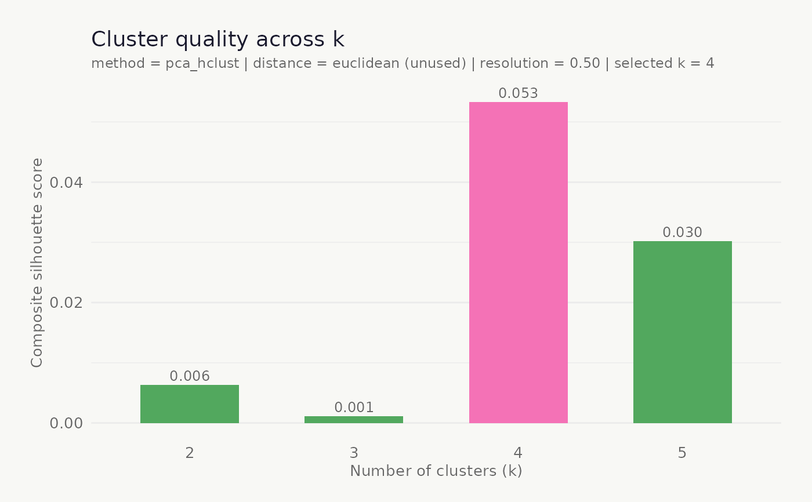

Encodes each time series as a sequence of signed directional steps
(\(+1\) increase, \(-1\) decrease, \(0\) no change) and clusters
the series based on the similarity of those sequences. The resulting
cluster column can be passed directly to make_plot_bouquet() via
stem_colors, flower_colors, facet_by, or cluster_hull.
The returned object is both the original data tibble (with an added
cluster column) and a cluster_bouquet S3 object. Call
summary.cluster_bouquet() on it to print a structured report of cluster
quality, sizes, and member series.
Usage
cluster_bouquet(
data,
time_col = 1,
series_col = 2,
value_col = 3,
k = "auto",
k_max = 8L,
method = c("pca_hclust", "pca_kmeans", "hclust", "kmeans", "pam"),
distance = c("euclidean", "correlation", "manhattan"),
resolution = 0.5,
pca_variance = 0.9,
cluster_col = "cluster",
seed = 42L,
verbose = FALSE
)Arguments
- data
A long-format data frame or tibble – the same format expected by
make_plot_bouquet().- time_col
<
tidy-select> The time index column. Defaults to the first column.- series_col
<
tidy-select> The column identifying each individual time series. Defaults to the second column.- value_col
<
tidy-select> The numeric value column. Defaults to the third column.- k
Either a positive integer specifying the number of clusters, or
"auto"(default) to select the optimal number by maximising the composite silhouette score acrossk = 2, ..., k_max.- k_max
A single positive integer. Upper bound considered when
k = "auto". Capped atn_series - 1. Defaults to8L.- method
The clustering algorithm. One of:
"pca_hclust"(Default) PCA projection followed by agglomerative hierarchical clustering with Ward's D2. Deterministic; no extra packages required. The
distanceargument does not apply."pca_kmeans"PCA projection followed by k-means. Set
seedfor reproducibility. Thedistanceargument does not apply."hclust"Ward's D2 hierarchical clustering directly on the direction sequences using the
distancemetric. Best for short series."kmeans"k-means on the direction sequences. Always uses Euclidean distance internally. Set
seedfor reproducibility."pam"Partitioning Around Medoids. More robust to outliers. Requires the cluster package.
- distance
Distance metric for
"hclust"and"pam". One of"euclidean"(default),"correlation"(\(1 - r\)), or"manhattan". Not used by PCA methods or"kmeans".- resolution
A non-negative number. Composite k-selection score: \(\bar{s}(k) \times \min_c \bar{s}_c(k) \times k^{\text{resolution}}\). Higher values favour finer clusters.
0= plain mean silhouette. Default0.5.- pca_variance
Cumulative variance retained during PCA. Only used by
"pca_hclust"and"pca_kmeans". Default0.90.- cluster_col
String. Name of the cluster column added to
data. Default"cluster".- seed
Integer or
NULL. Random seed passed tobase::set.seed()before k-means initialisation. Ensures reproducible results for"pca_kmeans"and"kmeans".NULL= no seed (non-reproducible). Default42L.- verbose
Logical. Print k selection table, chosen k, silhouette score, and cluster sizes. Default
FALSE.
Value
The original data tibble with one additional factor column (named
by cluster_col, levels "C1", "C2", ... ordered by decreasing size)
plus a cluster_bouquet S3 class. The object also carries a bq_meta
attribute containing all clustering diagnostics; use
summary.cluster_bouquet() to print them.
Details
Feature representation
Each series of length \(n\) is represented as a vector of \(n - 1\) signed steps \(d_i \in \{-1, 0, +1\}\).
Composite k-selection
Plain mean silhouette consistently selects k = 2 because two large blobs score globally well even when finer structure exists. The composite score adds a worst-cluster penalty and a resolution exponent.
Pairing with make_plot_bouquet()
data |>
cluster_bouquet(time_col = date, series_col = id, value_col = gwl) |>
make_plot_bouquet(
time_col = date, series_col = id, value_col = gwl,
stem_colors = cluster, flower_colors = cluster,
lon_col = lon, lat_col = lat, cluster_hull = cluster
)See also
make_plot_bouquet() for visualising the result.
summary.cluster_bouquet() for a structured quality report.
plot_cluster_quality() to plot silhouette scores across k.
Examples
set.seed(42)
n <- 52L
weeks <- seq(as.Date("2023-01-01"), by = "week", length.out = n)
season <- sin(seq(0, 2 * pi, length.out = n))
gw_long <- tibble::tibble(
week = rep(weeks, 6L),
station = rep(paste0("S", 1:6), each = n),
level_m = c(
8.5 + 0.8 * season + cumsum(rnorm(n, 0.00, 0.2)),
8.3 + 0.7 * season + cumsum(rnorm(n, 0.01, 0.2)),
7.2 + 0.5 * season + cumsum(rnorm(n, 0.02, 0.2)),
7.0 + 0.6 * season + cumsum(rnorm(n, 0.00, 0.2)),
9.1 + 1.1 * season + cumsum(rnorm(n, -0.01, 0.2)),
9.3 + 1.0 * season + cumsum(rnorm(n, -0.02, 0.2))
)
)
# Default: PCA + hclust, auto k
clustered <- cluster_bouquet(gw_long,
time_col = week, series_col = station, value_col = level_m)
# Inspect the result
summary(clustered)
#> -- cluster_bouquet summary ----------------------------------------------
#> Method : pca_hclust
#> Distance : euclidean (unused)
#> Seed : 42
#> Series : 6 k = 4 Resolution = 0.50
#> Mean silhouette : 0.053 (weak structure -- consider more data or fewer clusters)
#>
#> Auto k selection (composite silhouette score):
#> k = 2 : 0.0063
#> k = 3 : 0.0011
#> k = 4 : 0.0533 <-- selected
#> k = 5 : 0.0302
#>
#> Cluster sizes and members:
#> C1 (2 series, mean sil = 0.069)
#> S1, S4
#> C2 (2 series, mean sil = 0.090)
#> S3, S6
#> C3 (1 series, mean sil = 0.000)
#> S2
#> C4 (1 series, mean sil = 0.000)
#> S5
#>
#> Per-series silhouette widths:
#> S1 C1 0.074 |
#> S4 C1 0.065 |
#> S3 C2 0.110 ||
#> S6 C2 0.071 |
#> S2 C3 0.000
#> S5 C4 0.000
#> ------------------------------------------------------------------------
# Plot silhouette scores across k to inspect the elbow
# \donttest{
plot_cluster_quality(clustered)

# }